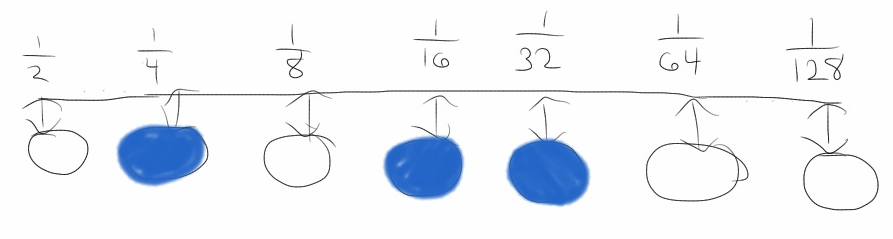
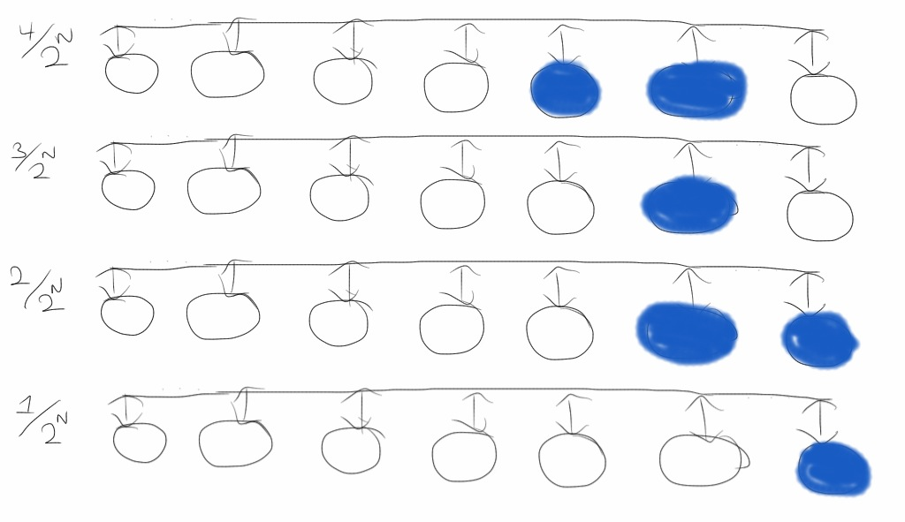
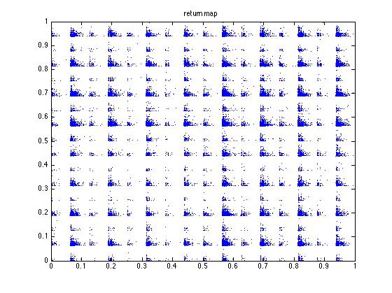
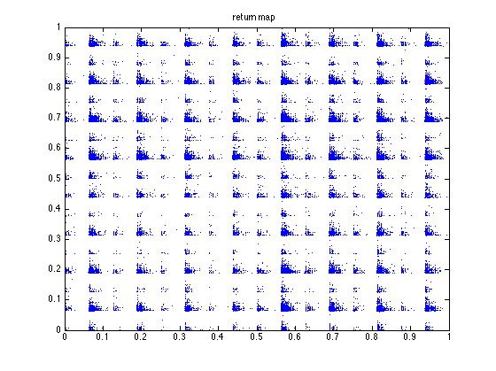
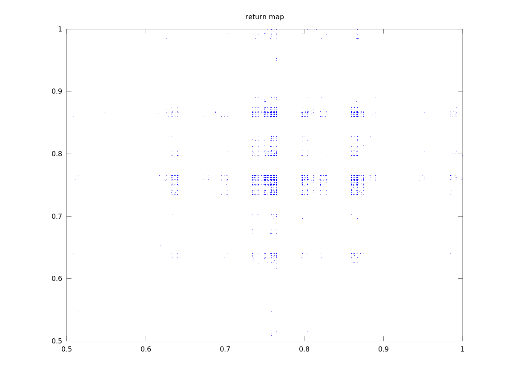
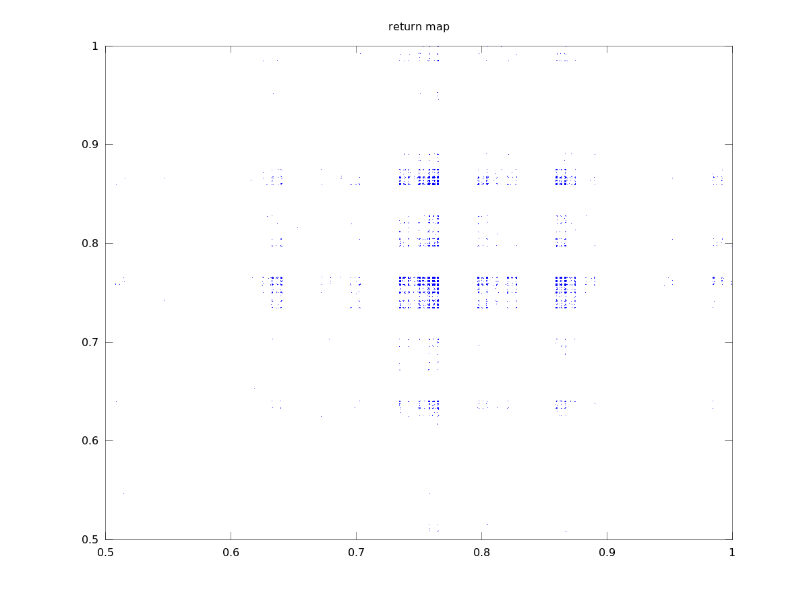
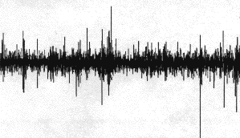
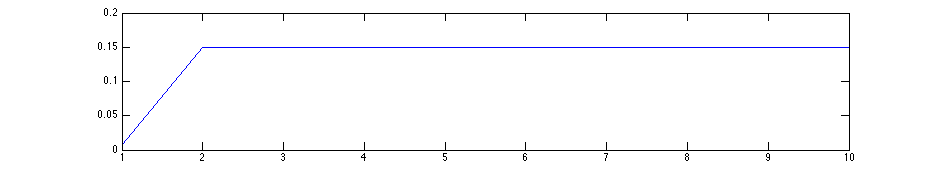
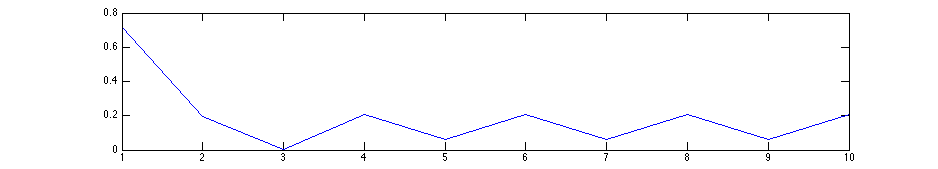

Neural networks are models of the brain. Actually, there are many different kinds of neural network models. (Wallis) What they have in common is that they consist of nodes (which model neurons) hooked together in some way. Signals then propogate through the network.
I explore a special kind of neural network in which input and output values are distributed over the states of many different “neurons.” This reflects recent experiments which have shown that neurons use sparse distributed representations in the olfactory bulb, for example (Yu Y). Specifically, I feed output back in as input to explore the dynamics of such a network.
With the variety of neural models, there have been many studies exploring the dynamics of them. J. C. Sprott has explored chaotic dynamics in networks which propogate real numbers through each node (Sprott). The state of the system is a multidimensional vector of the real-numbered states of the output nodes. In such a system, he found that large networks were more likely to show chaotic dynamics than small networks.
There are also neural network models which can be driven by a chaos. Researchers in Tokyo have modified a type of neural network model called Boltzmann machines to be driven by a chaotic function rather than stochastically. They then show that such machines have useful properties when it comes to building machine learning systems. (Suzuki)
Rather than using continuous / real-number inputs and outputs for nodes in a neural network, there are also models which use discrete synapses. (Barrett) A synapse is a synonym for an edge in a neural network. Synapses connect nerves together. It has been shown that discrete synapses are very efficient at recognition tasks and that optimal sparsity of active nodes and optimal number of synapses per node in the model are similar to the values from physical experiments.
The neural network model used in this experiment is simply a fully-connected graph. Nodes are either activated (1) or not (0). Edges have weights in [0, 1]. If an edge weight is above some threshold t, e.g. 0.5, activations will propogate, otherwise they do not.

Each application of the network to an input consists of three steps.
There are many choices for mapping between the binary states of nodes and a real number. We will see that this choice will actually affect the dynamics of the system. The reason is that some mappings may only have O(N) representable states for a network with N nodes, whereas others will have O(2N) representable states. This makes a big difference when we try to find chaos in these models.
A simple sparse distributed representation for a number in [0, 1] is used in the cortical learning algorithms. “Think of a slider widget of width W on a track with N increments.” (Grok) To represent 0 we arrange the nodes in a line and set the left-most W nodes to active. Similarly, to represent a 1, we set the right-most W nodes to active.
A benefit of this approach is that numbers close to each other in magnitude will also be close in Hamming distance. That is, if we treat the state of the nodes as bit strings, numbers with representations within W nodes of each other will have overlapping bits. The downside to this approach is that we are limited in the number of representable numbers. With a width of 1 we can only represent N different numbers. The number of representable numbers decreases as the width increases.

Perhaps the most obvious representation is as a natural binary numeral. Treat one node as the 1/2 place, another node as the 1/4 place, yet another as the 1/8 place, et cetera. The benefit of this system is that we can now represent 2N different numbers in a network of N nodes. What we lose is the property that numbers similar in magnitude will have low Hamming distances to each other. In fact, 1/2 and its nearest number in magnitude, 1/2 - 1/2N+1, will have a Hamming distance of N from each other, since every bit will be different.
Another choice has both the benefits of 2N possible numeral representations and Hamming distance proportional to the difference in magnitudes. Enumerate all possible bit strings by only changing on bit at a time. Start with all zeros for 0 and flip (1 changes to 0 and 0 changes to 1) the rightmost bit you can without repeating a previous representation. This is called a reflected binary Gray code. (Beasley)
There is a property missing in this representation, and that is sparseness. We will see that sparseness is important in the dynamics of these networks. Without it, chaos is not possible. An orbit will go to a state with all ones or all zeros.
I believe it is possible to use Gray codes in such a way that all representable numbers have some number W states active. Instead of 0 being all bits zero, it will have W bits active, grouped together at one end. To create such a mapping, we could enumerate a Gray code as normally done but only consider those with W active bits.
Such a code would allow us to represent N choose W possible numbers. Perhaps this would be a happy medium between the sliding encoding and the Gray code representation? I did not find a way to efficiently compute a mapping between [0, 1] and these sparse Gray codes for this project, so this encoding will not be used in these experiments.
The propogation of active states is quite simple. Considering only those edges whose weight is greater than the threshold, send a message across all edges originating at an active node. The recieving nodes merely add up the number of messages they recieve. This count will be used later to decide which state the nodes will become.
We can represent this adding up of messages with a matrix multiplication. If states of each node are a column vector v (values 0 or 1) and the active edges are a matrix G (with value 1 if the edge weight is above the threshold, and 0 if below), the number of messages propogated to each node is the column vector vG.
In these experiments I tried two different methods for choosing the output state of the nodes. The first method is to pick a threshold M. If a node recieves > M messages, it is activated, otherwise it is set to the inactive state.
It turns out for most graph configurations the first choice leads to rather uninteresting, fixed-point dynamics. Instead, we add a “inhibition” and “boosting” property to the activation dynamics. Simply, we choose the threshold M such that some proportion of the states will be active. e.g. approximately 50% of all nodes should be active. If multiple nodes have received the same number of messages, either all of these nodes will become active or all will become inactive.
In all experiments, I choose randomly choose graph with N nodes. After picking a threshold for edges to be active, this defines a one-dimensional map. I then feed an initial state to this map and iterate to find an orbit.
For my first set of experiments, I used a "slider" representation. Since only about N states make sense, with each iteration I convert the state to a floating point number and then back to a slider representation. For converting from these many states to floating points, I consider only the position of the median / middle active node.
I spent many hours of computation calculating orbits of various size graphs, edge thresholds, and node activation thresholds, but every orbit was either periodic or reached a fixed point! Here is a typical orbit.

Looking back, it doesn't seem too surprising that I could not find any periodic orbits with this representation method. There are so few possible valid states that sensitive dependence on initial conditions becomes quite unlikely.
Initially, my exploration using binary numeral representations did not look any more promising. Every orbit I tried went to 0 or 1 in a very short time. With a threshold too high, the orbit went to 0.

With a threshold too low, the orbit went to 1.

Since 0 means no nodes are active, it is trivial to see it is a fixed state. No messages will be sent! For 1, all nodes are active. To get here each node had to recieve enough messages to become active. With all nodes active, at least that many messages will be sent, so if we reach 1 starting from a different state, 1 must be a fixed state.
Although these systems are completely deterministic, we can try to understand the dynamics a bit better with probability theory. Each node recieves input from the a particular active input with a probability p. Since the graph is fully connected, p is equal to our edge threshold.
Therefore, if there are I active input nodes, each output node gets messages according to the binomial distribution B(p, I). If the threshold is set to be the median of this distribution, we have a standard random walk. This goes unbounded in both directions. If it is set greater or less, we know that the walk will on average continue unbounded in one direction. Thus we reach one of our fixed states, 0 or 1.
To get more interesting dynamics, we use inhibition. We ensure that only a reasonable number of nodes are placed into the active state. By the same mechanism, we can ensure we also place at leaste a minimal number of nodes into active state.
Basically, we pick the threshold after each step based on the proportion of nodes we want to become active. For example, if we want half the nodes to become active, we set the threshold to be the medium number of messages received in each iteration. This yields orbits and return maps that look like this:


 

I calculated the Lyapunov numbers for this last graph for orbits of length 100, 1,000, and 10,000. I got 14.1, 17.4, and 20.4, respectively. This increasing Lyapunov number reminds me of the same behaviour in a purely random orbit. We see from the orbit and return map that two numbers can be arbitrarily close to one another in magnitude but yield wildly different results.
We see from the return maps, we get a very discontinuous function. As we take the number of nodes N to infinity, the limit relation describes a function on real numbers. The majority of functions desrcibed by such a sequence of graphs will be discontinuous at all points.
In order for the limit function, f, to be continuous at a point, x, we'd need to “fill in” around the point. If we approach from the left or from the right, the limit of every subsequence should go to a particular value, f(x).
For each N, there are two values as close as possible to an interior point, x. These are x ± 2N. The map applied to these values should be nearer to the limit point p than the nearest values in N-1 had. |f(x) - f(x ± εN)| < |f(x) - f(x ± εN-1)|. Since there are only finitely many such possible values for each N, the probability of choosing such a function pN is less than 1. Thus the probability of picking a sequence of functions which makes the point x continuous is p1p2p3… → 0.
Since a Gray code can also represent 2N possible states, when looking at just the dynamics of how states of the nodes change over an orbit, it will be identical to the binary numeral case. Still, we expect the dynamics of the orbit to look a little different. Since we are mapping Gray codes to and from floating point numbers, we necessarily have a one-to-one function between the Gray code and the binary numeral representation. Therefore the maps are conjugate. (Alligood 115)
Since the maps are conjugate, the same analysis from the binary numeral of the continuity of these functions applies. That is, the probability is 0 that we pick a sequence of graphs to define a function that is continuous even at a single point.
The property of Gray codes that the nearest numbers in magnitude are only Hamming distance 1 away does help keep function values close together, though. Think about how we pick the next point in the orbit. Messages propogate along the edges out of nodes. Most of the messages will go to the same nodes in these three graph states (x and its neighbors). Therefore, the states resulting from the map application are likely to be similar to each other, since they only differ in the messages sent from a single node. This is quite a bit “nicer” than we had in the binary numeral interpretation.


Lyapunov numbers for 100, 1,000, and 10,000 length orbits were calculated using Wolf's algorithm at 7.5, 13.8, and 18.4, respectively.
 

Lyapunov numbers for 100, 1,000, and 10,000 length orbits were calculated using Wolf's algorithm at 8.7, 14.2, and 19.3, respectively.
These orbits actually look quite a bit different from those of the binary numerals, qualitatively. They seem to stay close to a certain value for most of the time with occasional deviations. This seems to be due to the property that numbers similar in magnitude are separated by a small Hamiltonian distance.
They remind me a bit of the plots of the successive differences in stock prices seen in the Fractal Geometry textbook. (Frame) For example, this image of the successive differences in IBM stock price from 1959 to 1996.
While this is a very simple, 1-layer model of brain activity, perhaps numbers actually are represented by something akin to Gray codes in the brain? One can imagine stock traders with Gray code orbits in their brain of what the IBM stock price should be.
In another set of experiments, I played with “learning” rules applied to these orbits. By that, I mean the graph generating the orbit is modified according to “Hebbian” learning rules, where nodes which fire in succession are wired more strongly together. The weight of the edge connecting them is increased.
It did not take long to see that the application of such a rule can “tame” chaos. Even with a binary numeral representation, what would have originally been chaotic orbits became fixed states
or periodic orbits.
The reason for this behavior is that the learning rule creates a feedback loop. By going to a particular number we become more likely to go to that number in the future. The learning rule does this by increasing the weights of those edges that got the orbit in a state and decreasing the weights of those edges that did not contribute.
When the weights of edges are increased, more edges get weights above the edge threshold. Thus more messages are sent to nodes that have already become active. With 50% of the nodes active at any one time, it is not surprising that the messages sent in successive steps are quite similar. It doesn't take long for this affect to overwhelm any chaotic dynamics.
In a neural network with distributed representations, what seems to matter most for the dynamics is the number of representable states. If a network with N nodes can only represent O(N) different numbers, the dynamics are relatively simple. If the network can represent O(2N) possible states, we have no problem finding chaotic orbits.
Representation also seems to matter for qualitative properties of the orbits generated. Though the map using Gray codes to convert from node states and the map interpreting node states as binary numerals are conjugate, they differ in what “typical” orbits look like. Orbits from gray codes seem to stay close to to a mean value with occasional large deviations. Orbits from binary numerals hop around a thicker band of values.
Since experiments have shown representations in real brains to be sparse and distributed (Yu Y) and as J.C. Sprott writes, a chaotic state is arguably the most healthy for a natural network, I hypothesize that brains represent numbers in the network with a “sparse” Gray code. That is, numbers of similar magnitudes have similar bit strings, as in Gray codes, but only a fixed number of bits are active at a time.
Full source code for these experiments is available on Bitbucket. The Lyapunov calculating functions are derived from the version available on Professor Pilant's Chaos and Dynamical Systems course webpage.
calculateorbit.m is perhaps the most important function. It creates an orbit using a given graph. In this case, it calculates the orbit using Gray code representation.
function [orbit] = calculateorbit(G, orbitlength, initialstate, edge_threshold)
% G : edges graph.
% S : statemap.
% threshold : number of active edges required to activate output.
% inputwidth : number of cells activated on input.
% orbitlength : number of iterations to do.
% initialstate : number at which to start, e.g. 0.0
% setup output
orbit = zeros(orbitlength, 1);
orbit(1) = initialstate;
N2 = size(G);
N = N2(1);
% Setup initial state.
I = zeros(N,1);
I(:) = graycodefromfloat(initialstate,N);
O = zeros(N,1);
G = 1 * (G > edge_threshold);
for i=1:orbitlength-1
% Activate input cells.
% Previously, we converted from a float back to a state,
% but this actually loses a lot of precision in large networks.
%I(:) = graycodefromfloat(orbit(i),N);
% Propogate activations.
O(:) = I' * G;
activation_threshold = median(O);
O(:) = O > activation_threshold;
% Convert back to a float.
orbit(i+1) = graycodetofloat(O);
% Setup next step.
I(:) = O;
end
end
calculatelearnedbitorbit.m is much like calculateorbit. It uses a learning rule to modify the graph as the orbit progresses.
function [orbit] = calculatelearnedbitorbit(G, orbitlength, initialstate, edge_threshold, proportion_active)
% G : edges graph.
% threshold : number of active edges required to activate output.
% inputwidth : number of cells activated on input.
% orbitlength : number of iterations to do.
% initialstate : number at which to start, e.g. 0.0
% setup output
orbit = zeros(orbitlength, 1);
orbit(1) = bitstatetofloat(initialstate);
% History is special in that it is part of the "competition" between
% various cells. Since learning so thoroughly tamed chaos, this can
% perhaps help keep things from getting too periodic.
% Cells "want" to fire, and this will keep the cells from getting too
% unhappy / dormant.
%history = ones(size(initialstate));
activation_threshold = zeros(size(initialstate));
activation_index = int64(proportion_active * numel(initialstate));
I = 1.0 * initialstate;
previousnodes = 1.0 * initialstate;
for iteri = 1:orbitlength-1
% Propogate activations.
I(:) = I' * (1.0 * (G > edge_threshold));
% Keep cells from getting dormant.
%I(:) = I + history;
% Make sure only a proportion are active.
% Perhaps 50% for now?
activation_threshold(:) = sort(I);
I(:) = 1.0 * (I > activation_threshold(activation_index));
% Update history with the new activations and lack-of-activations.
%history(I > 0) = 1.0;
%history(I == 0) = 1.2 * history(I == 0);
% Convert back to a float.
orbit(iteri+1) = bitstatetofloat(I);
% Learn!
% To learn: if a node is active for prediction and it gets activated
% on input, strengthen those incoming edges which were part
% of the prediction and
% weaken those incoming edges which did not contribute
% to the prediction.
% Note that the way we are calculating on orbit, a prediction is always
% a successful prediction.
G = learnfunction_hebbianstep(G, previousnodes, I, I, edge_threshold);
previousnodes(:) = I;
end
end
learnfunction_hebbianstep.m is the learning rule. “Nerves that fire together wire together.”
function G = learnfunction_hebbianstep(G, previousnodes, predictionnodes, nextnodes, edge_threshold)
% Do "Hebbian" learning, in-place.
increment = 0.02;
successfulprediction = (predictionnodes > 0) & (nextnodes > 0);
%unsuccessfulprediction = (predictionnodes > 0) & (nextnodes == 0);
% Increment those edges which provided a successful prediction.
G(previousnodes > edge_threshold,successfulprediction) = min(1.0, G(previousnodes > 0,successfulprediction) + increment);
% Decrement those edges which were not part of the successful prediction to
% those successful nodes, only.
G(previousnodes <= edge_threshold,successfulprediction) = max(0.0, G(previousnodes == 0,successfulprediction) - increment);
end